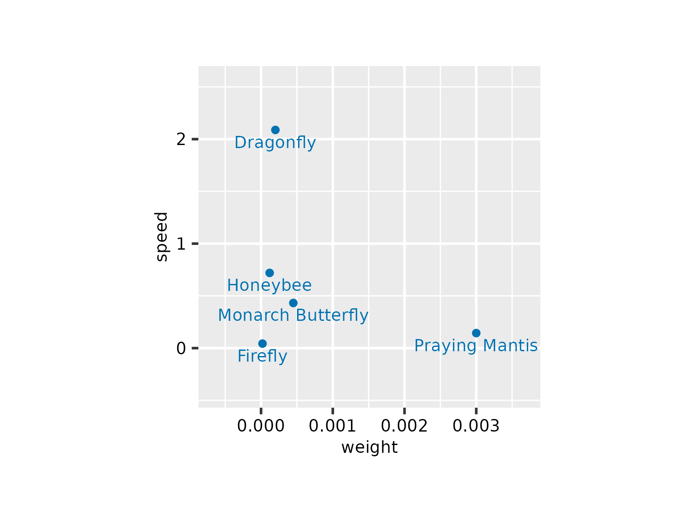
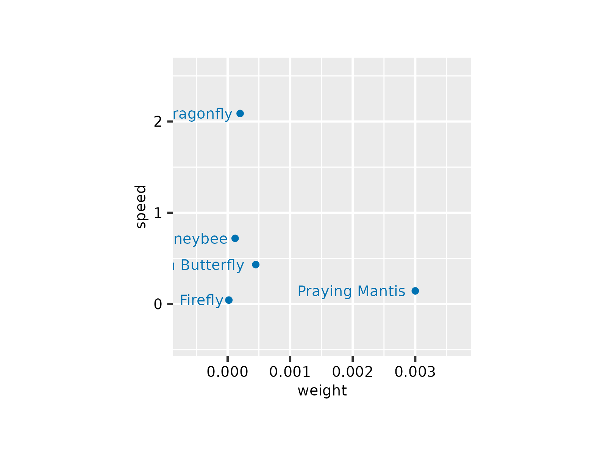
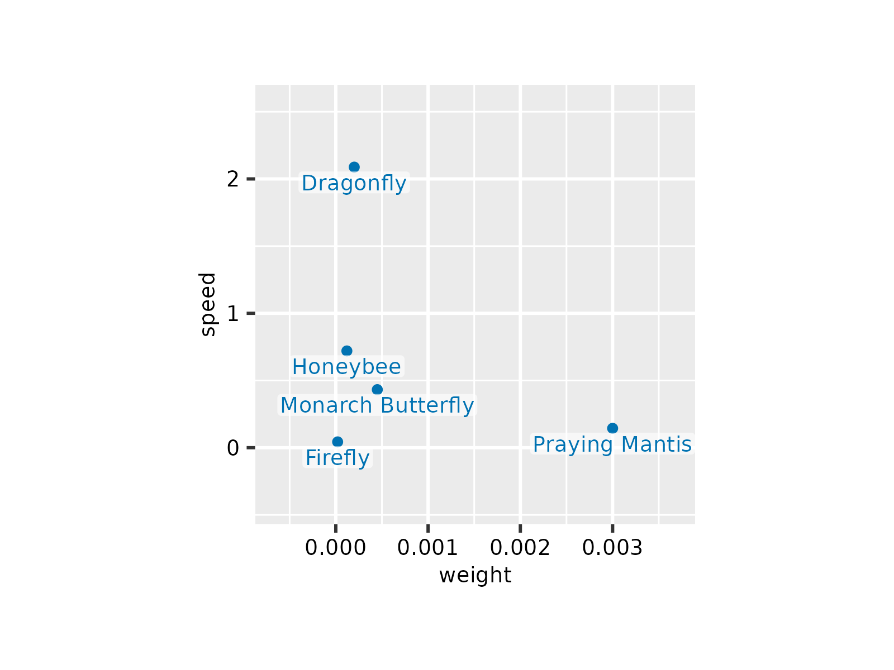
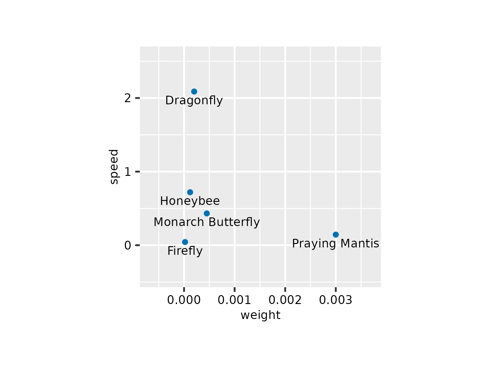
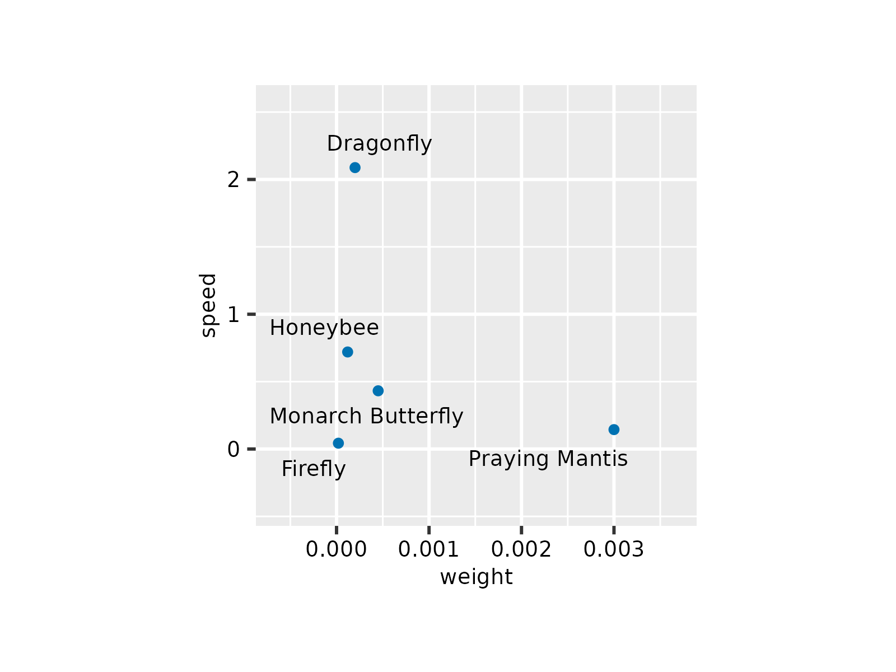
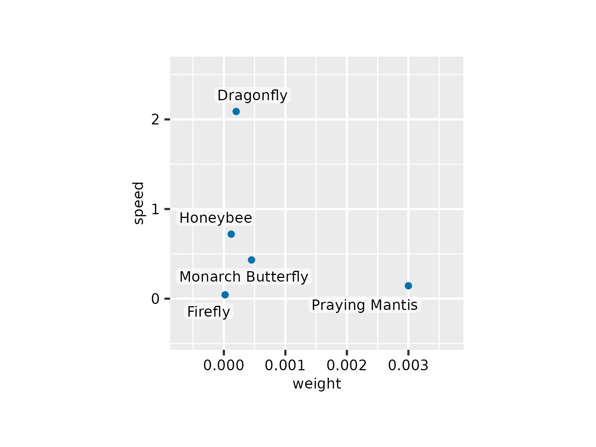
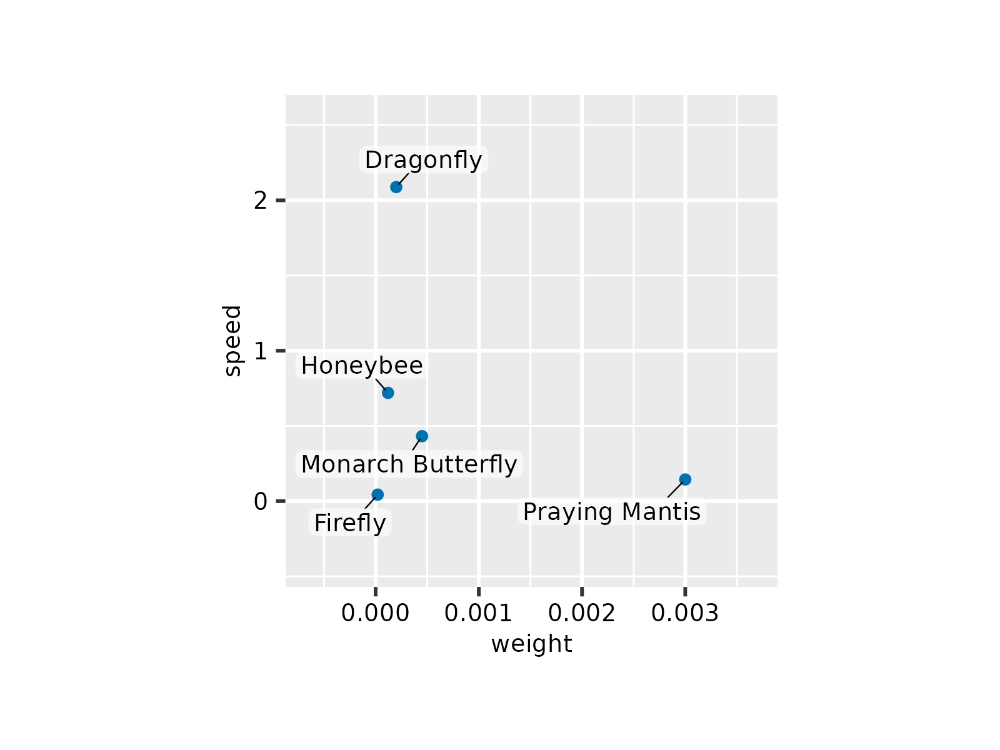

Add data labels
Usage
add_data_labels(
plot,
label,
data = all_rows(),
fontsize = 7,
background = FALSE,
background_color = "#FFFFFF",
background_alpha = 0.6,
label_position = c("below", "above", "left", "right", "center"),
...
)
add_data_labels_repel(
plot,
label,
data = all_rows(),
fontsize = 7,
segment.size = 0.2,
box.padding = 0.2,
max.overlaps = Inf,
background = FALSE,
background_color = "#FFFFFF",
background_alpha = 0.6,
...
)Arguments
- plot
A
tidyplotgenerated with the functiontidyplot().- label
Variable in the dataset to be used for the text label.
- data
The data to be displayed in this layer. There are three options:
If
all_rows()(the default) the complete dataset is displayed.A
functionto subset the plot data. Seefilter_rows()and friends.A
data.frameto override the plot data.
- fontsize
Font size in points. Defaults to
7.- background
Whether to include semitransparent background box behind the labels to improve legibility. Defaults to
FALSE.- background_color
Hex color of the background box. Defaults to
"#FFFFFF"for white.- background_alpha
Opacity of the background box. Defaults to
0.6.- label_position
Position of the label in relation to the data point. Can be one of
c("below", "above", "left", "right", "center").- ...
Arguments passed on to the
geomfunction.- segment.size
Thickness of the line connecting the label with the data point. Defaults to
0.2.- box.padding
Amount of padding around bounding box, as unit or number. Defaults to 0.25. (Default unit is lines, but other units can be specified by passing
unit(x, "units")).- max.overlaps
Exclude text labels when they overlap too many other things. For each text label, we count how many other text labels or other data points it overlaps, and exclude the text label if it has too many overlaps. Defaults to 10.
Details
add_data_labels_repel()usesggrepel::geom_text_repel(). Check there and in ggrepel examples for additional arguments.add_data_labels()andadd_data_labels_repel()support data subsetting. See Advanced plotting.
Examples
# Create plot and increase padding to make more space for labels
p <-
animals %>%
dplyr::slice_head(n = 5) %>%
tidyplot(x = weight, y = speed) %>%
theme_ggplot2() %>%
add_data_points() %>%
adjust_padding(all = 0.3)
# Default label position is `below` the data point
p %>% add_data_labels(label = animal)

# Alternative label positions
p %>% add_data_labels(label = animal, label_position = "above")
p %>% add_data_labels(label = animal, label_position = "right")
p %>% add_data_labels(label = animal, label_position = "left")

# Include white background box
p %>% add_data_labels(label = animal, background = TRUE)

p %>% add_data_labels(label = animal, background = TRUE,
background_color = "pink")
# Black labels
p %>% add_data_labels(label = animal, color = "black")

# Use repelling data labels
p %>% add_data_labels_repel(label = animal, color = "black")

p %>% add_data_labels_repel(label = animal, color = "black",
background = TRUE)

p %>% add_data_labels_repel(label = animal, color = "black",
background = TRUE, min.segment.length = 0)
